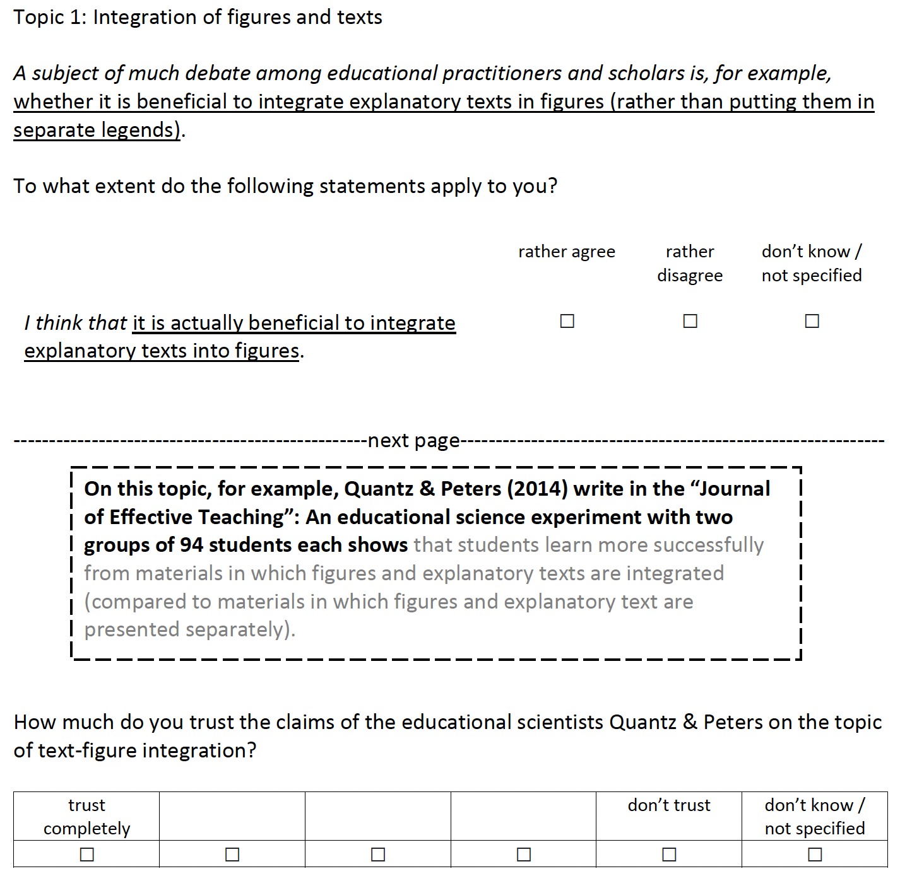
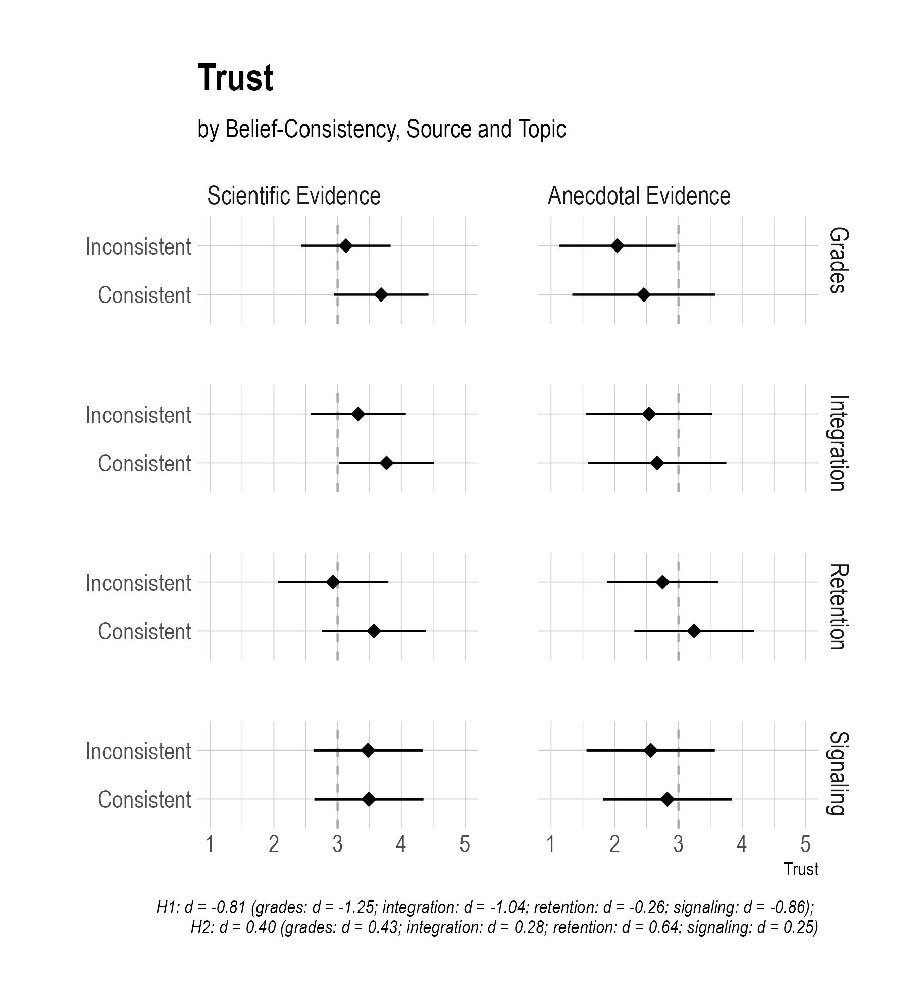
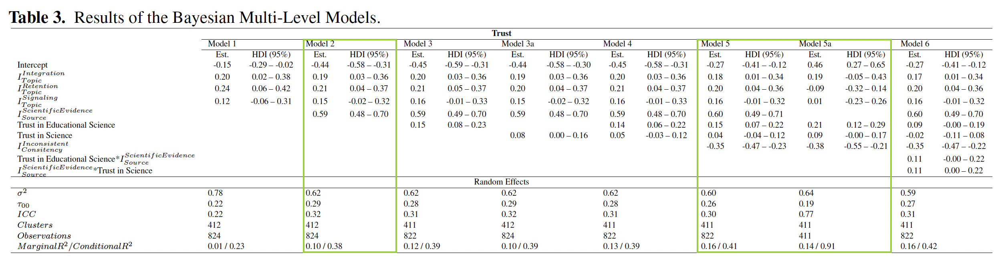

Teachers trust scientific evidence…
Kris-Stephen Besa4 and Samuel Merk1
1 Karlsruhe University of Education
2 ZPID - Leibniz-Institut for Psychology Trier
3 Eberhard Karls University Tübingen
4 University Münster
paper available at https://doi.org/10.3389/feduc.2022.976556
Paper presentation EARLI 2023 | 26.08.2023
Structure
- Evidence-informed school practice
- Trust in scientific evidence
- Trust in different information sources
- Trust and confirmation bias
- Experimental study - Teachers’ beliefs and their influence on trust
- Hypotheses
- Sample
- Design and materials
- Results
- Discussion
- References
Evidence-informed school practice
Evidence-informed school practice
Teachers can draw on different information sources when making professional decisions; information sources range from anecdotal evidence to scientific evidence (e.g., Buehl & Fives, 2009)
Evidence-informed school practice means to consider, among others, scientific evidence in professional actions e.g., to develop new practices
→ Increasing school quality, teaching quality and students’ achievement
(e.g., Brown et al., 2017)However, teachers often do not consider scientific evidence in their school practice (e.g., Brown et al., 2017; Hinzke et al., 2020)
Evidence-informed school practice
Numerous barriers exist that make it difficult for teachers to act in an evidence-informed manner:
- Resources (e.g., limited time)
- Belief systems (e.g., negative beliefs about the practical applicability of scientific knowledge)
- Cognitive abilities / competencies (e.g., lack of statistical knowledge)
(e.g., Brown et al., 2022; van Schaik et al., 2018)
Evidence-informed school practice
Numerous barriers exist that make it difficult for teachers to act in an evidence-informed manner:
- Resources (e.g., limited time)
- Belief systems (e.g., negative beliefs about the practical applicability of scientific knowledge)
- Cognitive abilities / competencies (e.g., lack of statistical knowledge)
(e.g., Brown et al., 2022; van Schaik et al., 2018)
Trust in scientific evidence
Trust in scientific evidence
Teachers often evaluate scientific evidence second-hand: instead of evaluating its veracity, they evaluate its credibility and trustworthiness
(e.g., Merk & Rosman, 2019)
→ Trust = key predictor/indicator to what extent scientific evidence is positively evaluated and considered (Bromme et al.,2022; Hendriks et al., 2016)Subjective criteria such as teachers’ beliefs can influence the evaluation of trust
(e.g., Dietz & Den Hartong, 2006; Blöbaum, 2016)
Trust in scientific evidence
Teachers often evaluate scientific evidence second-hand: instead of evaluating its veracity, they evaluate its credibility and trustworthiness
(e.g., Merk & Rosman, 2019)
→ Trust = key predictor/indicator to what extent scientific evidence is positively evaluated and considered (Bromme et al.,2022; Hendriks et al., 2016)Subjective criteria such as teachers’ beliefs can influence the evaluation of trust
(e.g., Dietz & Den Hartong, 2006; Blöbaum, 2016)
Trust in different information sources
(Future) teachers primarily consider anecdotal evidence in their practice (e.g., Buehl & Fives, 2009) and have more trust in other teachers than in scientists:
- Especially when looking for practical advice (Hendriks et al., 2021)
- Educational scientists = “smart but evil” (Merk & Rosman, 2019)
- Lack of integrity and benevolence as reasons for distrust in educational scientists (Rosman & Merk, 2021)
Trust in different information sources
(Future) teachers primarily consider anecdotal evidence in their practice (e.g., Buehl & Fives, 2009) and have more trust in other teachers than in scientists:
- Especially when looking for practical advice (Hendriks et al., 2021)
- Educational scientists = “smart but evil” (Merk & Rosman, 2019)
- Lack of integrity and benevolence as reasons for distrust in educational scientists (Rosman & Merk, 2021)
Anecdotal evidence that is not supported by science (e.g., the learning style theory) is highly prevalent in everyday school life and may lead to ineffective or dysfunctional practice
Trust and confirmation bias
Confirmation bias = own prior beliefs influence searching and interpreting information
- Information that is consistent with prior beliefs is preferred or perceived as more confirmatory
- Information that is inconsistent with prior beliefs is more quickly devalued and thus avoided or analyzed thoroughly to find errors in it
(e.g., Hart et al., 2009; Nickerson, 1998; Stroud, 2017)
Trust and confirmation bias
In the educational context, confirmation bias is hardly systematically researched:
- Teachers often do not look for data that challenge/question their own opinions (Van Lommel et al., 2017)
- When data is inconsistent with teachers’ beliefs, teachers look for explanations as to why the data might be wrong (Andersen, 2020)
- Student teachers are more likely to display confirmation bias than hindsight bias when evaluating scientific studies (Masnick & Zimmermann, 2009)
Trust and confirmation bias
In the educational context, confirmation bias is hardly systematically researched:
- Teachers often do not look for data that challenge/question their own opinions (Van Lommel et al., 2017)
- When data is inconsistent with teachers’ beliefs, teachers look for explanations as to why the data might be wrong (Andersen, 2020)
- Student teachers are more likely to display confirmation bias than hindsight bias when evaluating scientific studies (Masnick & Zimmermann, 2009)
A one-sided reference or lack of reference to scientific evidence can make it difficult or even impossible to adequately realize evidence-informed practice
Experimental study - teachers’ beliefs and their influence on trust
Hypotheses
H1: When teachers are confronted with knowledge claims regarding specific topics from educational science, they show more trust in claims if these are allegedly from another teacher (anecdotal evidence) than from a scientific study (scientific evidence).
H2: When teachers are confronted with evidence for specific knowledge claims of educational science, they show more trust in these claims if these are belief-consistent.
Sample
- N = 414 teachers in Germany
- 73.1% female teachers
- 80.8% of the teachers are between 30 and 59 years old
- Teachers teach at different types of schools (z.B. 29.3% teach at a primary school; 25.8% teach at a upper secondary school)
→ »Representative« sample
(cf. Destatis, 2019)



Discussion
Discussion
: In contrast to previous studies, teachers at hand showed greater trust in scientific evidence than in anecdotal evidence
- Trust as multidimensional construct vs. trust as an overall assessment
- Trust in specific statements vs. trust in sources without content statements
- Influence of publication body (scientific journal vs. teacher blog)
→ Information from social media is rated less trustworthy compared to scientific and anecdotal evidence (Braten & Ferguson, 2015)
Discussion
: In contrast to previous studies, teachers at hand showed greater trust in scientific evidence than in anecdotal evidence
- Trust as multidimensional construct vs. trust as an overall assessment
- Trust in specific statements vs. trust in sources without content statements
- Influence of publication body (scientific journal vs. teacher blog)
→ Information from social media is rated less trustworthy compared to scientific and anecdotal evidence (Braten & Ferguson, 2015)
: Consistent with previous studies, teachers also show strong confirmation bias in second-hand evaluations
→ Selective trust could lead to one-sided use of scientific evidence
→ Confirmation bias as a filter to evalute scientific evidence
Discussion
: In contrast to previous studies, teachers at hand showed greater trust in scientific evidence than in anecdotal evidence
- Trust as multidimensional construct vs. trust as an overall assessment
- Trust in specific statements vs. trust in sources without content statements
- Influence of publication body (scientific journal vs. teacher blog)
→ Information from social media is rated less trustworthy compared to scientific and anecdotal evidence (Braten & Ferguson, 2015)
: Consistent with previous studies, teachers also show strong confirmation bias in second-hand evaluations
→ Selective trust could lead to one-sided use of scientific evidence
→ Confirmation bias as a filter to evalute scientific evidence
: In the present study trust, not engagement with or use of evidence, was measured
→ Trust does not automatically imply evidence-informed actions
References
Andersen, I. G. (2020). What went wrong? Examining teachers’ data use and instructional decision making through a bottom-up data intervention in Denmark. International Journal of Educational Research, 102, 101585. https://doi.org/10.1016/j.ijer.2020.101585
Blöbaum, B. (2016). Key factors in the process of trust. On the analysis of trust under digital conditions. In B. Blöbaum (Ed.), In Trust and Communication in a Digitized World. Springer International Publishing (pp. 3–25). https://doi.org/10.1007/978-3-319-28059-2_1
Braten, I., & Ferguson, L. E. (2015). Beliefs about sources of knowledge predict motivation for learning in teacher education. Teaching and Teacher Education, 50, 13–23. https://doi.org/10.1016/j.tate.2015.04.003
Bromme, R., Kienhues, D., & Porsch, T. (2010). Who knows what and who can we believe? Epistemological beliefs are beliefs about knowledge (mostly) to be attained from others. In L. D. Bendixen & F. C. Feucht (Eds.), Personal Epistemology in the Classroom. Cambridge: Cambridge University Press (pp. 163–194). https://doi.org/10.1017/CBO9780511691904.006
Bromme, R., Mede, N. G., Thomm, E., Kremer, B., & Ziegler, R. (2022). An anchor in troubled times: Trust in science before and within the COVID-19 pandemic. PLOS ONE, 17, e0262823. https://doi.org/10.1371/journal.pone.0262823
Brown, C., Macgregor, S., Flood, J., & Malin, J. (2022). Facilitating Research-Informed Educational Practice for Inclusion. Survey Findings From 147 Teachers and School Leaders in England. Frontiers in Education, 7, 890832. https://doi.org/10.3389/feduc.2022.890832
Brown, C., Schildkamp, K., & Hubers, M. D. (2017). Combining the best of two worlds: A conceptual proposal for evidence-informed school improvement. Educational Research, 59(2), 154–172. https://doi.org/10.1080/00131881.2017.1304327
Buehl, M. M., & Fives, H. (2009). Exploring teachers’ beliefs about teaching knowledge: Where does it come from? Does it change? Journal of Experimental Education, 77, 367–407. https://doi.org/10.3200/JEXE.77.4.367-408
Destatis (2019). Bildung, Forschung und Kultur. Genesis-Online
Dietz, G. & Den Hartog, D. N. (2006). Measuring trust inside organisations. Personnel Review, 35, 557–588. https://doi.org/10.1108/00483480610682299
Hart, W., Albarracin, D., Eagly, A. H., Brechan, I., Lindberg, M. J., & Merrill, L. (2009). Feeling validated versus being correct: A meta-analysis of selective exposure to information. Psychological Bulletin, 135, 555–588. https://doi.org/10.1037/a0015701
Hendriks, F., Kienhues, D., & Bromme, R. (2016). Trust in science and the science of trust. In B. Blöbaum (Ed.), Trust and Communication in a Digitized World (pp.143–159). Cham: Springer International Publishing. https://doi.org/10.1007/978-3-319-28059-2_8
Hendriks, F., Seifried, E., & Menz, C. (2021). Unraveling the “smart but evil” stereotype: Pre-service teachers’ evaluations of educational psychology researchers versus teachers as sources of information. Zeitschrift für Pädagogische Psychologie, 35, 157–171. https://doi.org/10.1024/1010-0652/a000300
Hinzke, J.-H., Gesang, J., & Besa, K.-S. (2020). Zur Erschließung der Nutzung von Forschungsergebnissen durch Lehrpersonen. Forschungsrelevanz zwischen Theorie und Praxis. Zeitschrift für Erziehungswissenschaft, 23, 1303–1323. https://doi.org/10.1007/s11618-020-00982-6
Masnick, A. M., & Zimmerman, C. (2009). Evaluating scientific research in the context of prior belief: Hindsight bias or confirmation bias? Journal of Psychology of Science and Technology, 2, 29–36. https://doi.org/10.1891/1939-7054.2.1.29
Merk, S. & Rosman, T. (2019). Smart but evil? Student-Teachers’ perception of educational researchers’ epistemic trustworthiness. AERA Open, 5, 233285841986815. https://doi.org/10.1177/2332858419868158
Nickerson, R. S. (1998). Confirmation bias: A ubiquitous phenomenon in many guises. Review of General Psychology, 2, 175–220. https://doi.org/10.1037/1089-2680.2.2.175
Rosman, T., & Merk, S. (2021). Teacher’s reasons for trust and distrust in scientific evidence: Reflecting a “smart but evil” stereotype? AERA Open, 7, 23328584211028599. https://doi.org/10.1177/23328584211028599
Schmidt, K., Rosman, T., Cramer, C., Besa, K.-S., & Merk, S. (2022). Teachers trust educational science—Especially if it confirms their beliefs. Frontiers in Education, 7. https://doi.org/10.3389/feduc.2022.976556
Stroud, N. J. (2017). Understanding and overcoming selective exposure and judgment when communicating about science. In K. H. Jamieson, D. M. Kahan & D. A. Scheufele (Eds.) The Oxford Handbook of the Science of Science Communication (pp. 377–388). Oxford University Press. https://doi.org/10.1093/oxfordhb/9780190497620.013.41
Vanlommel, K., Van Gasse, R., Vanhoof, J., and Van Petegem, P. (2017). Teachers’ decision-making: Data based or intuition driven? International Journal of Educational Research, 83, 75–83. https://doi.org/10.1016/j.ijer.2017.02.013
Van Schaik, P., Volman, M., Admiraal, W., & Schenke, W. (2018) Barriers and conditions for teachers’ utilisation of academic knowledge. International Journal of Educational Research, 90, 50-63. https://doi.org/10.1016/j.ijer.2018.05.003.
Thank you for your attention!
Kirstin Schmidt
Karlsruhe University of Education
Bismarckstraße 10,
76133 Karlsruhe
kirstin.schmidt@ph-karlsruhe.de